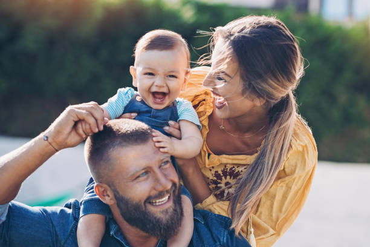

Sweet & Delicious es un proyecto que nació en plena pandemia.
Somos una familia de 3, papá, mamá y una pequeña. En 2020 con los horarios reducidos de trabajo y sin poder salir de casa
decidimos poner en marcha nuestro emprendimiento.
Daniela, es quien elabora con sus conocimientos de pastelería. Mientras que Cristian es quien se ocupa del área económica,
Sin embargo ambos nos ocupamos de darle vida a nuestras ideas.
Sweet & Deliciuos empezó como un delivery de postres en vasos. Pero con el correr del tiempo se fueron agregando más productos.
como tortas, alfajores, pasteles.
Seguimos proyectando y creciendo gracias a ustedes y su confianza del día a día